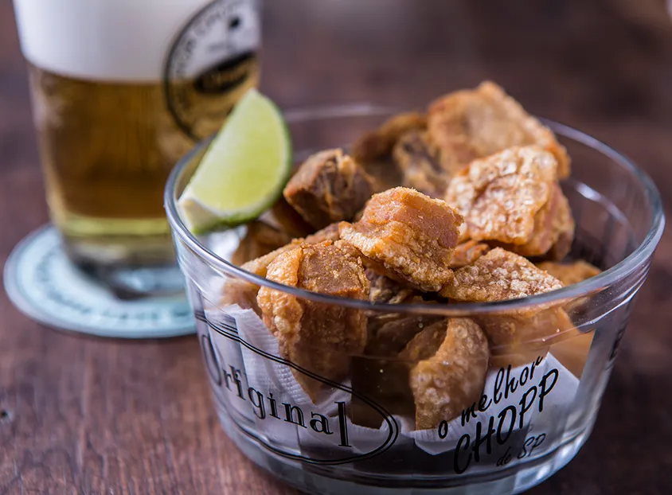

The Best Restaurants in São Paulo
São Paulo is a culinary paradise, offering a rich tapestry of flavors from around the globe. Whether you're a fan of traditional Brazilian cuisine or looking for an innovative dining experience, this city has something for everyone.
D.O.M.
Alex Atala is arguably the most acclaimed Brazilian chef in the world. With the help of his longtime right-hand man, Geovane Carneiro, and young innovative chef Rubens Salfer, Atala works to highlight and reinterpret Brazilian cuisine and its ingredients in a modern and creative way at two-Michelin-starred D.O.M. The tasting menu explores regions across the country, touching on ingredients and precontact techniques of Indigenous Brazilian peoples. Dishes include salted pirarucu fish with açaí tapenade, momotaro tomato stuffed with ripe bacuri (a sweet and sour native fruit), and many preparations using manioc. Meals are ended with a sticky brigadeiro made with Yanomami mushrooms.
Address: R. Barão de Capanema, 549, São Paulo, SP 01411- 011, Brazil
Maní
MasterChef host and award-winning chef Helena Rizzo runs the kitchen at this contemporary Brazilian restaurant. With decades of experience in the São Paulo dining scene, Rizzo delivers a thoughtful tasting menu of exciting dishes like creamy mullet bottarga with corn cream, pancetta, and katsuobushi, or goat slowly roasted overnight in turmeric leaves and served in a pool of luscious broth and marinated shiitake.
R. Joaquim Antunes, 210, São Paulo, SP 05415-000, Brazil
A Casa do Porco
This casual and lively restaurant (”the House of the Hog”) commands the most coveted wait list for a table in the whole city, and is partly responsible for bringing the buzz back to downtown São Paulo since opening in 2016. Chefs Jefferson and Janaína Rueda serve a true feast of hog, including homemade sausages, pork jowl sushi, and pancetta crackling with spicy guava jam. The current tasting menu pays homage to the love of pork in various Latin American countries, from Argentinian choripán to Peruvian ceviche (prepared with pork ears and feet). But the main reason to line up for a table is the whole pigs (raised by the chefs on their farm) prepared in barbecue grills in the middle of the kitchen, which produces soft and tender meat with crunchy, delicious rinds.
Address: R. Araújo, 124, São Paulo, SP 01220-020, Brazil
Restaurante Aizomê
Aizomê has established Telma Shiraishi as a prominent female chef in the male-dominated sushi industry and earned her recognition from the government of Japan as an ambassador for Japanese cuisine in Brazil. In her airy, charming restaurant in Jardins, she serves an omakase alongside hot dishes, available in the dining room and in private spaces outfitted with tatami mats. Shiraishi’s cooking is technical and delicate, like her golden, crispy tempura or black cod with miso. Everything pairs well with a great selection of teas, including cold matcha and hōjicha.
Address: Alameda Fernão Cardim, 39 - Jardim Paulista, São Paulo - SP, 01403-020, Brazil
Tordesilhas
Chef Mara Salles might as well be the first lady of Brazilian cuisine. At Tordesilhas, she serves regional, home-style cooking with vibrant touches, highlighting the country’s cultural diversity, from bobó de camarão (shrimp in cassava puree and red palm oil known as dendê) to northern tacacá soup made from dried shrimp, manioc root, and jambu (a native fruit that creates a pleasant tingling sensation on the tongue).
Address: Al. Tietê, 489, São Paulo, SP 01417-020, Brazil
With all this information, you're all set to explore the finest dining spots. Enjoy your culinary experience!